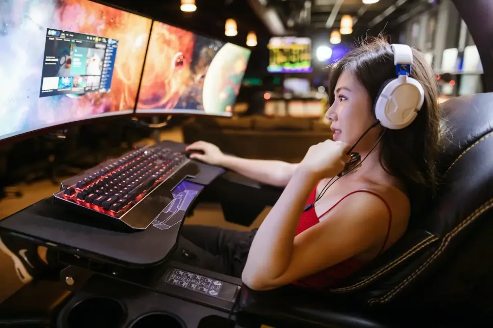

Dos and don’ts for creating player experiences that feel clear, satisfying and memorable.

View full imageDesign for player understanding
Players should understand what they can do, what is happening and why it matters. This applies to tutorials, HUDs, menus, progression systems and feedback.
When information is unclear, players may blame themselves or the game. Good UX makes the rules and possibilities legible.
Make feedback immediate and meaningful
Feedback can be visual, auditory, haptic or systemic. It tells players whether an action worked, whether they are improving and what changed in the world.
Strong feedback loops make games feel responsive and satisfying.
Respect cognitive load
Games can be complex, but players should not be overwhelmed by unnecessary information. HUDs and menus need hierarchy, timing and context.
The right information should appear at the right moment, with enough clarity to support decision-making.
Design for motivation
Progression, rewards, goals and unlocks help players understand why they should keep playing. These systems should support motivation without feeling manipulative or confusing.
A good Game UX designer thinks about short-term feedback and long-term engagement together.
Support immersion
The interface should feel connected to the game’s world, tone and fantasy. A menu can be functional while still expressing the identity of the game.
Immersion is not the absence of UI. It is the feeling that the UI belongs to the experience.
takeaway